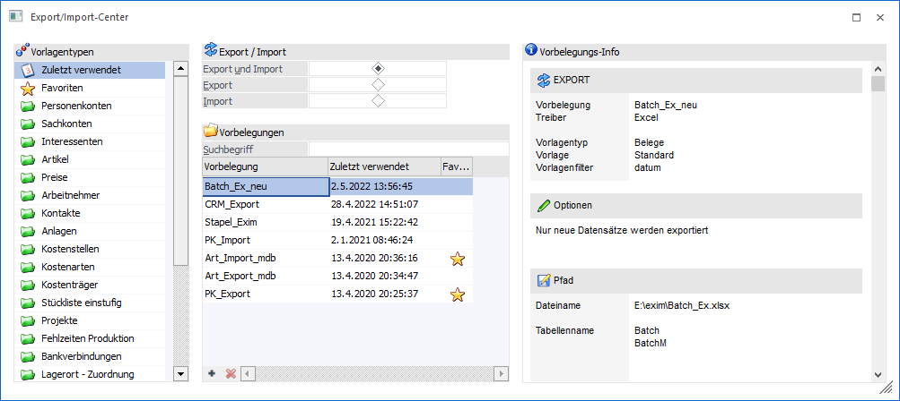
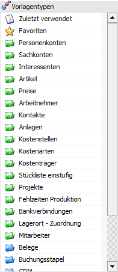
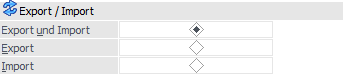
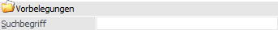
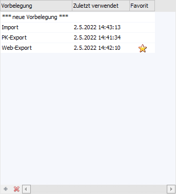
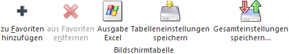
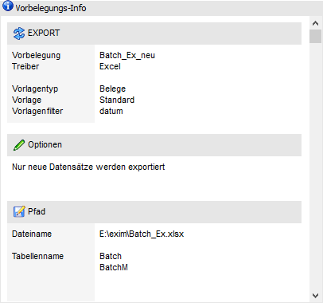
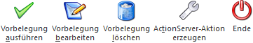

Das Export/Import-Center kann über…
1 WinLine START
1 Vorlagen
1 EXIM-Center
… aufgerufen werden und bietet eine Übersicht aller EXIM-Vorlagen der WinLine. Neben der Anzeige, Bearbeitung und Ausführung von bestehenden Vorlagen können mit Hilfe des EXIM-Centers auch neue EXIM-Vorlagen kreiert oder Action Server-Aktionen angelegt werden.

Das Fenster "Export/Import-Center" ist in die folgenden Bereiche untergliedert:
ü Tabelle "Vorlagentypen"
ü Bereich "Vorlagen"
ü Bereich "Vorbelegungs-Info"
Tabelle "Vorlagentypen"

In der Tabelle werden alle Programmbereiche aufgeführt, welche über ein Ex- und Import verfügen. Hierbei wird zwischen Stamm- (grüne Ordner) und Bewegungsdaten (blaue Ordner) unterschieden. Durch Anwahl eines Typs wird die Tabelle "Vorbelegungen" entsprechend gefüllt. Neben den Vorlagentypen stehen noch folgende weitere Auswahlen zur Verfügung:
ü
In der Rubrik "Zuletzt verwendet"
werden jene Vorbelegungen angezeigt, welche vom Benutzer zuletzt verwendet
wurden.
ü
In der Rubrik "Meine Favoriten" werden
die eigenen Favoriten angezeigt. Die Favoriten werden mit Hilfe des
Tabellenbuttons "zu Favoriten hinzufügen" definiert.
Hinweis
Der Vorlagentyp "Arbeitnehmer" steht in Mandanten mit dem Länderkennzeichen "Österreich" zur Verfügung. Der Vorlagentyp "Arbeitnehmer D" entsprechend nur in deutschen Mandanten.
Export / Import

Ø Export und Import / Export / Import
Neben der Selektion des Vorlagentyps kann an dieser Stelle definiert werden, ob nur Export-, nur Import- oder Ex- und Importvorbelegungen in der Tabelle "Vorbelegungen" angezeigt werden sollen.
Vorbelegungen

Ø Suchbegriff
Neben der Auswahl des Vorlagentyps und der Angabe im Bereich "Export / Import" kann der Inhalt der Tabelle "Vorbelegung" mit Hilfe einer Volltextsuche eingeschränkt werden. Die Suche erfolgt hierbei in der Bezeichnung der Vorbelegungen.
Tabelle "Vorbelegung"

In der Tabelle werden alle Vorbelegungen des zuvor ausgewählten Typs (siehe Tabelle "Vorlagentyp"), angezeigt. Diese Anzeige kann durch den Bereich "Export / Import" bzw. durch die Angabe eines Suchbegriffs weiter eingeschränkt werden. Die Tabelle kann maximal 20 Einträge darstellen.
Hinweis
Der Eintrag *** neue Vorbelegung *** ermöglicht über die Anwahl des Buttons "Vorbelegungen bearbeiten" bzw. durch einen Doppelklick auf den Eintrag die Neuanlage einer Vorbelegung für den im Fokus stehenden Vorlagentypen. In der Folge wird das entsprechende EXIM-Fenster in der dazugehörigen Applikation geöffnet, wo anschließend alle gewünschten Einstellungen vorgenommen werden können.
Ø Vorbelegung
In der Spalte "Vorbelegung" wird die Bezeichnung der Vorbelegung angezeigt, welche bei der Erstellung eines EXIM-Vorganges in der WinLine als Vorbelegung vergeben worden ist.
Hinweis
Eine Vorbelegung kann nur geladen und verwendet werden, wenn sowohl die Berechtigung für die Vorlage als auch ggf. für einen dort hinterlegten Filter vorhanden sind.
Ø Zuletzt verwendet
In dieser Spalte wird dargestellt, wann zuletzt ein EXIM-Vorgang mit Hilfe der Vorbelegung durchgeführt wurde. Die Angabe erfolgt mit den Angaben:
ü Tag
ü Monat
ü Jahr
ü Uhrzeit
Hinweis
Ein Eintrag in dieser Spalte gibt Aufschluss darüber, wann die Vorbelegung zuletzt verwendet wurde. Ob der Export / Import dabei erfolgreich abgeschlossen wurde, kann daraus nicht abgelesen werden. Diese Informationen können u.a. jedoch aus dem Action Server-Protokoll gezogen werden.
Ø Favorit
An dieser Stelle wird mit Hilfe des Icons dargestellt, ob es sich um einen Favoriten handelt.
Tabellenbuttons

Ø zu Favoriten hinzufügen / aus Favoriten entfernen
Abhängig davon, ob die Vorbelegung bereits als Favoriten gekennzeichnet wurde oder nicht, stehen die folgenden Buttons zur Verfügung:
ü zu Favoriten hinzufügen
Mit
Hilfe dieses Buttons kann eine Vorbelegung in die Rubrik "Meine Favoriten"
übergeben werden.
ü aus Favoriten entfernen
Wurde
die ausgewählte Vorbelegung bereits als Favorit gekennzeichnet, so kann mit
Hilfe dieses Buttons die Vorbelegung aus den Favoriten entfernt werden (die
Vorbelegung als solches bleibt natürlich erhalten).
Ø Ausgabe Excel
Durch Anwahl des Buttons "Ausgabe Excel" wird der Inhalt der Tabelle an Microsoft Excel übergeben.
Ø Tabelleneinstellungen speichern
Die Spalten einer Tabelle können grundsätzlich an beliebige Positionen verschoben, bzw. in der Breite entsprechend angepasst werden. Durch Anwahl des Buttons "Tabelleneinstellungen speichern" werden die Einstellungen benutzerspezifisch gespeichert und bei dem nächsten Aufruf des Programmpunktes wieder vorgeschlagen.
Ø Gesamteinstellungen speichern
Im Gegensatz zu "Tabelleneinstellungen speichern" können mit "Gesamteinstellungen speichern" mehrere Tabellenaufbauten gespeichert und nach Wunsch geladen werden. Zusätzlich werden Sonderfunktionen der Tabelle (z.B. "Spalte gruppieren") ebenfalls bei der Speicherung bedacht.
Vorbelegungs-Info

Im rechten Bereichs des Fensters werden Detailinformation zu der aktuell gewählten Vorbelegung angezeigt.
Ø Vorbelegung
Vergebene Bezeichnung der EXIM-Vorlage.
Ø Treiber
Selektierter Treiber des letzten EXIM-Vorganges.
Ø Vorlagentyp
Gewählter Typ, der für die Vorlage gespeichert worden ist.
Ø Vorlage
Zeigt die EXIM-Vorlage, welche für den Vorgang selektiert worden ist.
Ø Vorlagenfilter
Sofern ein Filter verwendet wurde, wird dieser angezeigt.
Ø Optionen
Hier werden ggfs. zur Verfügung stehende Optionen oder Eingabefelder aus dem EXIM-Vorgang werden angezeigt.
Beispiel
Bei einem durchgeführten Batchbeleg-EXIM wird die dort gewählte Export-Selektion "nur neue Belege" in der Vorbelegungs-Info gezeigt.
Ø Pfad
Informationen über Pfadangabe und Dateinamen werden gezeigt - ebenso wie Informationen zu den Tabellennamen. Datenbanknamen werden (z. B. bei der Wahl eines SQL- oder MS Access-Treibers) ebenso angegeben.
Ø Beschreibung
An dieser Stelle werden die Beschreibungen angezeigt, welche in den EXIM-Fenstern der Vorbelegungen eingetragen werden können.
Buttons

Ø Vorbelegung ausführen
Durch Anwahl des Buttons "Vorbelegung ausführen" bzw. der Taste F5 wird das EXIM-Fenster des ausgewählten Vorbelegung geöffnet und die Vorbelegung ausgeführt.
Ø Vorbelegung bearbeiten
Mit Hilfe dieses Buttons wird das jeweilige EXIM-Fenster geöffnet und die Vorbelegung geladen. Steht in der Tabelle "Vorbelegungen" der Tabelleneintrag *** neue Vorbelegung *** im Fokus, so ist über die Anwahl des Buttons eine Neuanlage für den entsprechenden Typ möglich.
Ø Vorbelegung löschen
Durch Anwahl dieses Buttons kann die ausgewählte Vorbelegung gelöscht werden.
Ø Action Server-Aktion erzeugen
Mit Hilfe dieses Buttons kann eine Action Server-Aktion für die ausgewählte Vorbelegung erzeugt werden. Hierfür öffnet sich nach Anwahl des Buttons das Fenster "Action Server - Aktionen" im Schritt 3 von 4. Die vorherigen Angaben wurden von der WinLine bereits automatisch gesetzt.
Ø Ende
Durch Anwahl des Buttons "Ende" bzw. der Taste ESC wird das EXIM-Center geschlossen.
Hinweis
Wenn während des Aufrufes aus dem EXIM-Center im EXIM-Fenster eine Export- oder Import-Vorschau aktiv ist, wird mit einer entsprechenden Meldung abgebrochen.